import numpy as np
import matplotlib.pyplot as plt
import statsmodels.api as sm
from statsmodels.multivariate.pca import PCA as smPCA
from statsmodels.nonparametric.kernel_regression import KernelReg
from statsmodels.nonparametric.kde import KDEUnivariate
from scipy import stats
plt.style.use('assets/book.mplstyle')
rng = np.random.default_rng(42)19 Multivariate Methods and Nonparametric Smoothing
19.1 Motivation
Two related problems: (1) reducing the dimensionality of multivariate data (PCA, factor analysis, CCA), and (2) estimating relationships without assuming a parametric form (kernel regression, LOWESS, KDE). Both are about what the estimator converges to and at what rate.
Statsmodels provides tools for both: statsmodels.multivariate for PCA, factor analysis, CCA, and MANOVA; statsmodels.nonparametric for LOWESS, kernel regression, and kernel density estimation.
19.2 Mathematical Foundation
19.2.1 PCA: why variance maximization works
PCA asks: if you could only keep \(k\) linear combinations of your \(p\) variables, which ones would preserve the most information?
The answer: the \(k\) directions of maximum variance. Why variance? Because a direction with high variance is one where the data points are spread out — it carries the most information. A direction with zero variance means all data points have the same value there — it carries no information and can be discarded.
Formally, the first principal component \(\mathbf{v}_1\) is: \[ \mathbf{v}_1 = \arg\max_{\|\mathbf{v}\|=1} \text{Var}(\mathbf{X}\mathbf{v}) = \arg\max_{\|\mathbf{v}\|=1} \mathbf{v}^\top\hat{\boldsymbol{\Sigma}}\mathbf{v}, \] where \(\hat{\boldsymbol{\Sigma}}\) is the sample covariance matrix. The solution is the eigenvector of \(\hat{\boldsymbol{\Sigma}}\) with the largest eigenvalue. The second PC is the eigenvector with the second largest eigenvalue, subject to being orthogonal to the first, and so on.
Connection to SVD: If \(\mathbf{X}\) is centered, the PCA is equivalent to the SVD: \(\mathbf{X} = \mathbf{U}\boldsymbol{\Sigma}\mathbf{V}^\top\). The columns of \(\mathbf{V}\) are the principal component directions. The diagonal entries of \(\boldsymbol{\Sigma}^2/(n-1)\) are the eigenvalues of \(\hat{\boldsymbol{\Sigma}}\) (the variance explained by each component).
How many components to keep? Look at the scree plot (eigenvalue vs component number). The “elbow” — where eigenvalues drop from large to small — suggests the number of true underlying factors. Components after the elbow are noise.
19.2.2 Factor analysis: latent variables behind observed data
PCA finds directions of maximum variance, but it does not model why those directions exist. Factor analysis does: it posits that the \(p\) observed variables are driven by \(k \ll p\) latent factors plus idiosyncratic noise:
\[ \mathbf{X} = \boldsymbol{\Lambda}\mathbf{f} + \boldsymbol{\varepsilon}, \]
where \(\boldsymbol{\Lambda}\) is a \(p \times k\) loadings matrix, \(\mathbf{f}\) is the \(k \times 1\) factor vector, and \(\boldsymbol{\varepsilon} \sim \mathcal{N}(\mathbf{0}, \boldsymbol{\Psi})\) with \(\boldsymbol{\Psi}\) diagonal (each variable has its own noise, uncorrelated with others). The implied covariance is \(\boldsymbol{\Sigma} = \boldsymbol{\Lambda}\boldsymbol{\Lambda}^\top + \boldsymbol{\Psi}\).
The rotation indeterminacy problem. For any orthogonal matrix \(\mathbf{R}\) (\(\mathbf{R}^\top\mathbf{R} = \mathbf{I}\)), define \(\tilde{\boldsymbol{\Lambda}} = \boldsymbol{\Lambda}\mathbf{R}\) and \(\tilde{\mathbf{f}} = \mathbf{R}^\top\mathbf{f}\). Then \(\tilde{\boldsymbol{\Lambda}}\tilde{\mathbf{f}} = \boldsymbol{\Lambda}\mathbf{R}\mathbf{R}^\top\mathbf{f} = \boldsymbol{\Lambda}\mathbf{f}\) — the model produces identical data. The loadings are not uniquely determined by the data; there are infinitely many equivalent solutions related by rotation.
This is not a bug — it is a fundamental property of the model. Without additional constraints, asking “which variable loads on which factor” has no unique answer. Varimax rotation (Kaiser, 1958) resolves the ambiguity by finding the rotation \(\mathbf{R}\) that maximizes the variance of the squared loadings within each factor. This pushes each loading toward either 0 or \(\pm 1\), yielding a simple structure where each variable loads heavily on one factor and weakly on others. The rotation does not change the fit (\(\boldsymbol{\Lambda}\boldsymbol{\Lambda}^\top\) is invariant) — it changes interpretability.
PCA vs factor analysis: PCA extracts directions of maximum variance without modeling error structure. Factor analysis models the error structure explicitly (the diagonal \(\boldsymbol{\Psi}\)) and separates common variance (\(\boldsymbol{\Lambda}\boldsymbol{\Lambda}^\top\)) from unique variance (\(\boldsymbol{\Psi}\)). When \(\boldsymbol{\Psi} \to \mathbf{0}\) (no unique variance), factor analysis reduces to PCA.
19.2.3 Canonical correlation analysis (CCA)
CCA generalizes correlation to two sets of variables. Given \(\mathbf{X}_1 \in \mathbb{R}^{n \times p_1}\) and \(\mathbf{X}_2 \in \mathbb{R}^{n \times p_2}\), CCA finds linear combinations \(\mathbf{a}^\top\mathbf{X}_1\) and \(\mathbf{b}^\top\mathbf{X}_2\) that are maximally correlated:
\[ (\mathbf{a}_1, \mathbf{b}_1) = \arg\max_{\mathbf{a}, \mathbf{b}} \text{Corr}(\mathbf{X}_1\mathbf{a}, \mathbf{X}_2\mathbf{b}). \]
This reduces to a generalized eigenvalue problem. Partition the covariance matrix as \(\boldsymbol{\Sigma} = \begin{pmatrix} \boldsymbol{\Sigma}_{11} & \boldsymbol{\Sigma}_{12} \\ \boldsymbol{\Sigma}_{21} & \boldsymbol{\Sigma}_{22} \end{pmatrix}\). The canonical correlations are the singular values of the matrix \(\boldsymbol{\Sigma}_{11}^{-1/2} \boldsymbol{\Sigma}_{12} \boldsymbol{\Sigma}_{22}^{-1/2}\). Equivalently, they are the square roots of the eigenvalues of \(\boldsymbol{\Sigma}_{11}^{-1}\boldsymbol{\Sigma}_{12} \boldsymbol{\Sigma}_{22}^{-1}\boldsymbol{\Sigma}_{21}\).
The connection to SVD is direct: compute the SVD of the standardized cross-covariance matrix, and the singular values are the canonical correlations. The left and right singular vectors, mapped back through \(\boldsymbol{\Sigma}_{11}^{-1/2}\) and \(\boldsymbol{\Sigma}_{22}^{-1/2}\), give the canonical weight vectors \(\mathbf{a}\) and \(\mathbf{b}\).
19.2.4 Kernel density estimation: putting bumps at data points
The histogram is the simplest density estimator, but it depends on bin placement. KDE improves on it by placing a smooth “bump” (kernel) at each data point and summing:
\[ \hat{f}(x) = \frac{1}{nh}\sum_{i=1}^n K\!\left(\frac{x - X_i}{h}\right), \]
where \(K\) is a kernel function (typically Gaussian: \(K(u) = \frac{1}{\sqrt{2\pi}}e^{-u^2/2}\)) and \(h\) is the bandwidth (how wide each bump is).
Why the bandwidth is the key parameter: It controls the bias-variance tradeoff:
- Small \(h\) (narrow bumps): each data point creates a sharp spike. Low bias (the estimate tracks every data point) but high variance (different samples give very different estimates). The KDE is wiggly.
- Large \(h\) (wide bumps): the bumps overlap and the estimate becomes smooth. High bias (fine structure is smeared out) but low variance. The KDE is smooth.
19.2.4.1 The AMISE derivation
The optimal bandwidth minimizes the mean integrated squared error (MISE), defined as \(\text{MISE}(h) = \mathbb{E}\!\left[\int (\hat{f}(x) - f(x))^2\,dx\right]\). The MISE decomposes into integrated squared bias plus integrated variance. A Taylor expansion of the kernel convolution gives the pointwise bias and variance:
\[ \text{Bias}[\hat{f}(x)] = \tfrac{h^2}{2}\,\mu_2(K)\,f''(x) + O(h^4), \qquad \text{Var}[\hat{f}(x)] = \frac{R(K)}{nh}\,f(x) + O(n^{-1}), \]
where \(\mu_2(K) = \int u^2 K(u)\,du\) is the second moment of the kernel and \(R(K) = \int K(u)^2\,du\) is the roughness of the kernel. For the Gaussian kernel: \(\mu_2(K) = 1\), \(R(K) = 1/(2\sqrt{\pi})\).
Integrating the pointwise MSE and dropping higher-order terms gives the asymptotic MISE (AMISE):
\[ \text{AMISE}(h) = \frac{h^4}{4}\,\mu_2(K)^2\,R(f'') + \frac{R(K)}{nh}, \]
where \(R(f'') = \int [f''(x)]^2\,dx\) is the roughness of the true density’s second derivative. Differentiating with respect to \(h\) and setting to zero:
\[ h^* = \left[\frac{R(K)}{\mu_2(K)^2\,R(f'')\,n} \right]^{1/5} \propto n^{-1/5}. \]
Substituting back yields \(\text{AMISE}(h^*) \propto n^{-4/5}\), so the MISE-optimal integrated error rate is \(n^{-4/5}\) and the pointwise rate is \(n^{-2/5}\). Compare this to the parametric rate \(n^{-1/2}\): the gap is the price of nonparametrics. You pay for not knowing the functional form, and the payment grows with dimension (see the curse-of-dimensionality table below).
Silverman’s rule plugs in \(R(f'')\) for a Gaussian reference density, yielding \(h^* = 1.06\,\hat{\sigma}\,n^{-1/5}\). This works well for unimodal, roughly symmetric data but oversmooths multimodal distributions — the Gaussian reference has small \(R(f'')\), so the rule picks a bandwidth too wide for data with sharp features.
19.2.5 LOWESS and kernel regression
LOWESS (LOcally WEighted Scatterplot Smoothing) estimates \(\mathbb{E}[Y \mid X = x]\) by fitting a separate linear regression at each point \(x\), using only nearby observations (weighted by their distance from \(x\)).
The frac parameter controls the fraction of data used in each local fit: small frac (using few nearby points) gives a wiggly curve; large frac (using many points) gives a smooth curve. This is the nonparametric analogue of bandwidth selection in KDE.
Kernel regression (KernelReg) is similar but uses a kernel weighting instead of LOWESS’s tricube weights. Both converge to the true conditional expectation, but at the nonparametric rate \(O(n^{-2/(d+4)})\).
19.2.6 Local linear regression and boundary bias
The Nadaraya-Watson estimator (local constant kernel regression) takes a weighted average of nearby \(Y\) values:
\[ \hat{m}(x) = \frac{\sum_{i=1}^n K_h(x - X_i)\,Y_i} {\sum_{i=1}^n K_h(x - X_i)}, \]
where \(K_h(\cdot) = K(\cdot/h)/h\). This has a problem at boundaries: when \(x\) is near the edge of the data, the kernel weights are asymmetric (there are more points on one side), which introduces \(O(1)\) bias — the estimate is pulled toward the interior.
Local linear regression (Fan, 1993) fixes this. Instead of averaging, it fits a weighted linear regression at each point:
\[ \hat{m}(x) = \mathbf{e}_1^\top \arg\min_{\boldsymbol{\beta}} \sum_{i=1}^n K_h(x - X_i)\,(Y_i - \beta_0 - \beta_1(X_i - x))^2, \]
where \(\mathbf{e}_1 = (1, 0)^\top\) extracts the intercept. The local linear fit adapts to the boundary: the linear term absorbs the asymmetric weighting, reducing boundary bias from \(O(1)\) to \(O(h^2)\) — the same rate as in the interior.
This is why statsmodels’ KernelReg defaults to reg_type='ll' (local linear) rather than reg_type='lc' (local constant / Nadaraya-Watson). The local linear estimator is design-adaptive: it automatically handles boundaries, uneven spacing, and heterogeneous density of the \(X\) values without manual adjustment.
19.2.7 The curse of dimensionality
The convergence rate \(O(n^{-2/(d+4)})\) reveals a fundamental problem: for \(d\)-dimensional inputs, you need exponentially more data to achieve the same accuracy:
| Dimension \(d\) | Rate | \(n\) needed for 1% accuracy |
|---|---|---|
| 1 | \(n^{-2/5}\) | ~10,000 |
| 2 | \(n^{-1/3}\) | ~1,000,000 |
| 5 | \(n^{-2/9}\) | ~10^{9} |
| 10 | \(n^{-1/7}\) | ~10^{14} |
This is why nonparametric methods are practical only for low-dimensional problems (\(d \leq 3\) for KDE, \(d \leq 5\) for kernel regression). For higher dimensions, use parametric models or dimension reduction (PCA) first.
19.3 Statsmodels Implementation
19.3.1 PCA
PCA finds the directions of maximum variance in your data. If you have 10 variables but only 3 underlying factors drive the variation, PCA will reveal this: the first 3 principal components will capture most of the variance, and the remaining 7 will be noise.
statsmodels.multivariate.pca.PCA provides PCA with eigenvalue decomposition, scree plots, and component scores.
# Create synthetic data with a known low-rank structure:
# 200 observations, 10 variables, but only 3 true factors
n, p = 200, 10
factors = rng.standard_normal((n, 3)) # 3 latent factors
loadings = rng.standard_normal((3, p)) # how factors map to variables
X_pca = factors @ loadings + 0.5*rng.standard_normal((n, p)) # + noise
# Fit PCA: extract 5 components, standardize variables first
# standardize=True centers and scales each column (like StandardScaler)
pca = smPCA(X_pca, ncomp=5, standardize=True)
# pca.eigenvals: variance captured by each component
# If 3 factors are real, PC1-PC3 should capture most variance
print("Variance explained by each component:")
for i in range(5):
print(f" PC{i+1}: {pca.eigenvals[i]/pca.eigenvals.sum():.1%}")Variance explained by each component:
PC1: 37.2%
PC2: 31.6%
PC3: 26.0%
PC4: 3.2%
PC5: 2.0%fig, ax = plt.subplots()
ax.bar(range(1, 6), pca.eigenvals[:5]/pca.eigenvals.sum(),
color="C0", alpha=0.7)
ax.plot(range(1, 6), np.cumsum(pca.eigenvals[:5])/pca.eigenvals.sum(),
'o-', color="C1", label="Cumulative")
ax.set_xlabel("Component"); ax.set_ylabel("Variance explained")
ax.legend()
plt.show()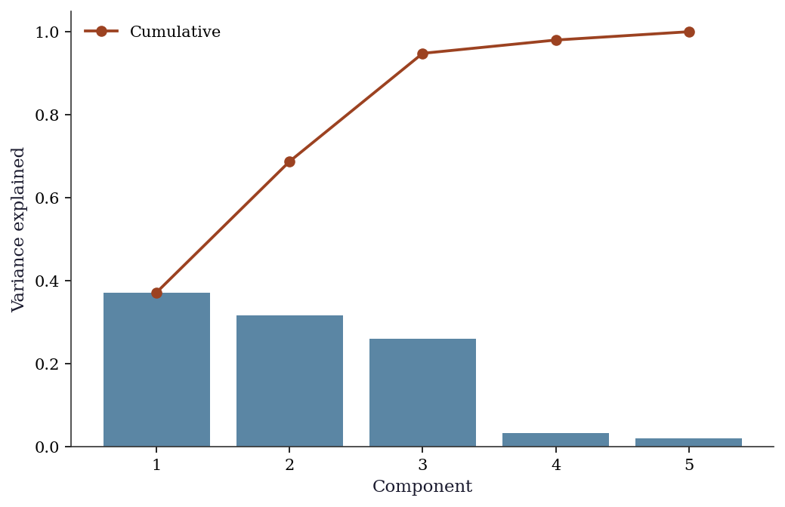
19.3.2 Factor analysis
statsmodels.multivariate.factor.Factor fits the factor model \(\mathbf{X} = \boldsymbol{\Lambda}\mathbf{f} +
\boldsymbol{\varepsilon}\) and returns loadings, uniquenesses, and communalities. The method parameter selects the estimation approach: 'pa' (principal axis factoring) is iterative but robust; 'ml' (maximum likelihood) gives chi-squared goodness-of-fit tests but requires normality and may fail to converge.
from statsmodels.multivariate.factor import Factor
from statsmodels.multivariate.factor_rotation import (
rotate_factors,
)
# Data with 2 true factors driving 6 observed variables
n_fa, p_fa = 200, 6
true_L = np.array([[1, 0], [0.9, 0], [0.8, 0],
[0, 1], [0, 0.9], [0, 0.8]])
fa_factors = rng.standard_normal((n_fa, 2))
X_fa = (fa_factors @ true_L.T
+ 0.3*rng.standard_normal((n_fa, p_fa)))
fa = Factor(X_fa, n_factor=2, method='pa')
res_fa = fa.fit()
print("Unrotated loadings:")
print(res_fa.loadings.round(3))
print(f"\nUniqueness: {res_fa.uniqueness.round(3)}")Unrotated loadings:
[[-0.665 0.687]
[-0.655 0.69 ]
[-0.663 0.658]
[ 0.747 0.622]
[ 0.742 0.604]
[ 0.724 0.596]]
Uniqueness: [0.087 0.095 0.128 0.055 0.084 0.121]The unrotated loadings mix both factors on every variable. Varimax rotation reveals the true simple structure:
# Varimax rotation finds the rotation R that maximizes
# the variance of squared loadings within each factor
L_rot, T_rot = rotate_factors(
res_fa.loadings, method='varimax',
)
print("Varimax-rotated loadings:")
print(L_rot.round(3))Varimax-rotated loadings:
[[-0.037 0.955]
[-0.028 0.951]
[-0.055 0.932]
[ 0.972 -0.035]
[ 0.956 -0.045]
[ 0.937 -0.038]]After rotation, variables 1–3 load on factor 1 and variables 4–6 load on factor 2 — recovering the true structure. The rotation matrix \(\mathbf{T}\) satisfies \(\mathbf{T}^\top\mathbf{T} = \mathbf{I}\), confirming it is an orthogonal rotation that preserves the fit.
19.3.3 Canonical correlation analysis (CCA)
statsmodels.multivariate.cancorr.CanCorr computes canonical correlations between two variable sets and provides significance tests via Wilks’ lambda.
from statsmodels.multivariate.cancorr import CanCorr
# Two variable sets with a known shared factor
shared = rng.standard_normal((200, 1))
X1_cca = (shared @ rng.standard_normal((1, 3))
+ 0.5*rng.standard_normal((200, 3)))
X2_cca = (shared @ rng.standard_normal((1, 4))
+ 0.5*rng.standard_normal((200, 4)))
cc = CanCorr(X1_cca, X2_cca)
cc_test = cc.corr_test()
print("Canonical correlations:")
for i, r in enumerate(
cc_test.stats['Canonical Correlation'].values
):
print(f" CC{i+1}: {r:.3f}")
print("\nWilks' lambda test:")
print(cc_test.stats[
['Wilks\' lambda', 'Num DF', 'F Value', 'Pr > F']
].to_string())Canonical correlations:
CC1: 0.927
CC2: 0.139
CC3: 0.026
Wilks' lambda test:
Wilks' lambda Num DF F Value Pr > F
0 0.136972 12 47.930198 0.0
1 0.980129 6 0.655596 0.685623
2 0.999318 2 0.066846 0.93536The first canonical correlation should be large (reflecting the shared factor), while the remaining correlations should be near zero (pure noise).
19.3.4 MANOVA
statsmodels.multivariate.manova.MANOVA tests whether group means differ across multiple response variables simultaneously. It reports four test statistics: Wilks’ lambda, Pillai’s trace, Hotelling-Lawley trace, and Roy’s greatest root.
import pandas as pd
from statsmodels.multivariate.manova import MANOVA
# Three groups with known differences on 2 response variables
n_per = 80
groups = np.repeat(['A', 'B', 'C'], n_per)
y1 = np.concatenate([rng.normal(0, 1, n_per),
rng.normal(1.5, 1, n_per),
rng.normal(0.5, 1, n_per)])
y2 = np.concatenate([rng.normal(0, 1, n_per),
rng.normal(0, 1, n_per),
rng.normal(2, 1, n_per)])
df_mv = pd.DataFrame(
{'y1': y1, 'y2': y2, 'group': groups}
)
mv = MANOVA.from_formula('y1 + y2 ~ group', data=df_mv)
print(mv.mv_test().results['group']['stat']) Value Num DF Den DF F Value Pr > F
Wilks' lambda 0.459542 4 472.0 56.068097 0.0
Pillai's trace 0.600584 4.0 474.0 50.856398 0.0
Hotelling-Lawley trace 1.045237 4 282.163265 61.582865 0.0
Roy's greatest root 0.899831 2 237 106.630007 0.0Wilks’ lambda is the most commonly reported: values near 0 indicate strong group separation, values near 1 indicate groups are indistinguishable. The \(F\) approximation converts lambda to a familiar scale; Pillai’s trace is more robust to violations of homogeneity of covariance.
19.3.5 Kernel density estimation
KDE estimates the probability density from data, without assuming a parametric form (like “the data is normal”). It places a small bump (kernel) at each data point and sums them up. The bw (bandwidth) parameter controls how wide each bump is — wider = smoother estimate.
# Create bimodal data: a mixture of two normal distributions
# KDE should reveal the two peaks without us telling it there are two
x_kde = np.concatenate([rng.normal(-2, 0.8, 300),
rng.normal(2, 1.2, 200)])
kde = KDEUnivariate(x_kde)
kde.fit(kernel='gau', bw='silverman')
fig, ax = plt.subplots()
ax.hist(x_kde, bins=40, density=True, alpha=0.3, color="C0",
label="Histogram")
ax.plot(kde.support, kde.density, color="C1", linewidth=1.5,
label=f"KDE (bw={kde.bw:.3f})")
ax.set_xlabel("x"); ax.legend()
plt.show()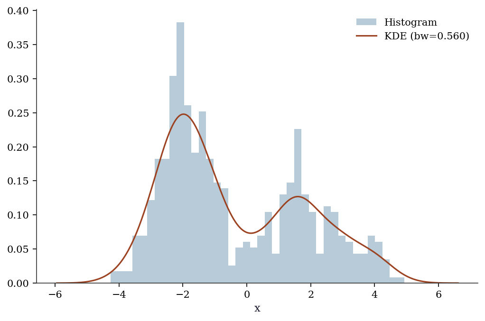
19.3.6 LOWESS (locally weighted scatterplot smoothing)
# Nonlinear relationship
x_lo = np.sort(rng.uniform(0, 4*np.pi, 200))
y_lo = np.sin(x_lo) + 0.3*rng.standard_normal(200)
lowess = sm.nonparametric.lowess(y_lo, x_lo, frac=0.2)
fig, ax = plt.subplots()
ax.scatter(x_lo, y_lo, s=10, alpha=0.5, label="Data")
ax.plot(lowess[:, 0], lowess[:, 1], color="C1", linewidth=2,
label="LOWESS (frac=0.2)")
ax.plot(x_lo, np.sin(x_lo), '--', color="C2", label="True")
ax.legend()
plt.show()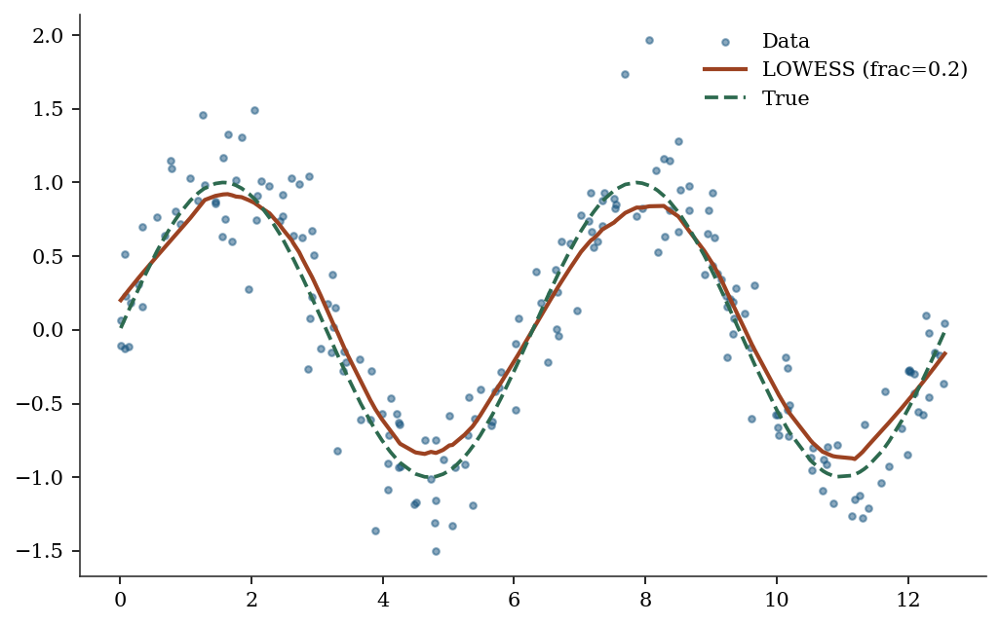
19.3.7 Kernel regression
KernelReg has two key parameters: var_type (variable types: 'c' for continuous, 'u' for unordered discrete, 'o' for ordered discrete) and reg_type ('ll' for local linear, 'lc' for local constant / Nadaraya-Watson). The bandwidth is selected automatically via least-squares cross-validation.
kr = KernelReg(y_lo, x_lo, var_type='c', reg_type='ll')
y_pred, y_mfx = kr.fit()
print(f"KernelReg R²: {1 - np.var(y_lo - y_pred)/np.var(y_lo):.3f}")KernelReg R²: 0.879# Compare reg_type='ll' vs 'lc'
kr_lc = KernelReg(
y_lo, x_lo, var_type='c', reg_type='lc',
)
y_lc, _ = kr_lc.fit()
fig, ax = plt.subplots()
ax.scatter(x_lo, y_lo, s=8, alpha=0.3, color="C0")
ax.plot(x_lo, y_pred, color="C1", linewidth=2,
label=f"Local linear (bw={kr.bw[0]:.2f})")
ax.plot(x_lo, y_lc, color="C2", linewidth=2,
label=f"Local constant (bw={kr_lc.bw[0]:.2f})")
ax.plot(x_lo, np.sin(x_lo), '--', color="gray",
label="True")
ax.legend()
plt.show()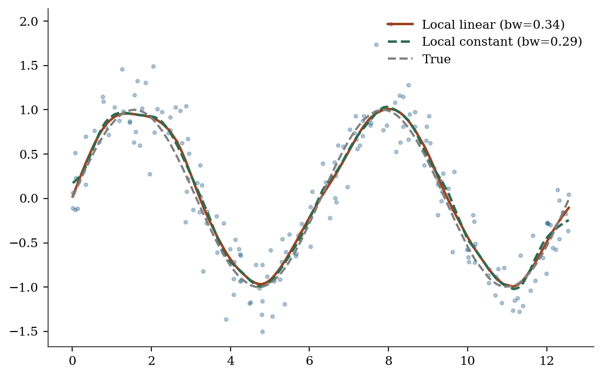
19.4 From-Scratch Implementation
19.4.1 PCA via numpy SVD
X_centered = X_pca - X_pca.mean(axis=0)
X_std = X_centered / X_centered.std(axis=0)
U, S, Vt = np.linalg.svd(X_std, full_matrices=False)
var_explained = S**2
print(f"Top 3 variance: {var_explained[:3].round(2)}")
print(f"statsmodels: {pca.eigenvals[:3].round(2)}")Top 3 variance: [704.11 598.03 493.16]
statsmodels: [704.11 598.03 493.16]19.4.2 KDE from scratch with Silverman bandwidth
The from-scratch KDE places a Gaussian bump at each data point and sums. Silverman’s rule provides the bandwidth.
def kde_gaussian(x_eval, data, bw):
"""Gaussian kernel density estimate.
Evaluates KDE at points x_eval using data and bandwidth
bw. Implements the estimator from §19.2.
Parameters
----------
x_eval : array, shape (m,)
Points at which to evaluate the density.
data : array, shape (n,)
Observed sample.
bw : float
Bandwidth (kernel width).
Returns
-------
density : array, shape (m,)
"""
n = len(data)
# Each row: one eval point; each col: one data point
u = (x_eval[:, None] - data[None, :]) / bw
# Gaussian kernel: (2π)^{-1/2} exp(-u²/2)
K = np.exp(-0.5 * u**2) / np.sqrt(2 * np.pi)
return K.sum(axis=1) / (n * bw)
def silverman_bw(data):
"""Silverman's rule-of-thumb bandwidth.
h = 1.06 * σ̂ * n^{-1/5}, optimal for Gaussian data.
"""
sigma = np.std(data, ddof=1)
return 1.06 * sigma * len(data) ** (-1/5)
bw_manual = silverman_bw(x_kde)
x_grid = np.linspace(x_kde.min() - 1, x_kde.max() + 1, 500)
f_hat = kde_gaussian(x_grid, x_kde, bw_manual)
# Verify against statsmodels
kde_check = KDEUnivariate(x_kde)
kde_check.fit(kernel='gau', bw='silverman')
print(f"Scratch bandwidth: {bw_manual:.4f}")
print(f"statsmodels bw: {kde_check.bw:.4f}")
# Compare at a few points via interpolation
from scipy.interpolate import interp1d
sm_interp = interp1d(
kde_check.support, kde_check.density,
bounds_error=False, fill_value=0.0,
)
test_pts = np.array([-2, 0, 2])
print("\nDensity comparison at test points:")
for pt in test_pts:
print(f" x={pt:+d}: scratch={kde_gaussian(np.array([pt]), x_kde, bw_manual)[0]:.4f}, "
f"sm={sm_interp(pt):.4f}")Scratch bandwidth: 0.6597
statsmodels bw: 0.5601
Density comparison at test points:
x=-2: scratch=0.2328, sm=0.2478
x=+0: scratch=0.0821, sm=0.0743
x=+2: scratch=0.1140, sm=0.117319.4.3 Local linear regression from scratch
At each evaluation point \(x\), local linear regression solves a weighted least squares problem: minimize \(\sum_i K_h(x - X_i)(Y_i - \beta_0 - \beta_1(X_i - x))^2\). The solution uses the kernel-weighted normal equations.
def local_linear(x_eval, X, Y, bw):
"""Local linear kernel regression.
Solves a weighted least squares at each evaluation point.
Implements Fan (1993); see §19.2 on boundary bias.
Parameters
----------
x_eval : array, shape (m,)
Evaluation points.
X : array, shape (n,)
Predictor values.
Y : array, shape (n,)
Response values.
bw : float
Bandwidth.
Returns
-------
y_hat : array, shape (m,)
"""
m = len(x_eval)
y_hat = np.empty(m)
for j in range(m):
# Kernel weights: Gaussian kernel centered at x_eval[j]
u = (X - x_eval[j]) / bw
w = np.exp(-0.5 * u**2)
# Weighted design matrix: [1, X_i - x]
dx = X - x_eval[j]
# Normal equations for WLS:
# [Σw Σw·dx ] [β₀] [Σw·Y ]
# [Σw·dx Σw·dx²] [β₁] = [Σw·dx·Y ]
s0 = w.sum()
s1 = (w * dx).sum()
s2 = (w * dx**2).sum()
t0 = (w * Y).sum()
t1 = (w * dx * Y).sum()
det = s0 * s2 - s1**2
# β₀ is the fitted value at x_eval[j]
y_hat[j] = (s2 * t0 - s1 * t1) / det
return y_hat
# Use the same bandwidth as statsmodels KernelReg
bw_ll = kr.bw[0]
y_scratch_ll = local_linear(x_lo, x_lo, y_lo, bw_ll)
# Verify against statsmodels
max_diff = np.max(np.abs(y_scratch_ll - y_pred))
print(f"Max |scratch - statsmodels|: {max_diff:.6f}")
print(f"R² (scratch): "
f"{1 - np.var(y_lo - y_scratch_ll)/np.var(y_lo):.3f}")
print(f"R² (statsmodels): "
f"{1 - np.var(y_lo - y_pred)/np.var(y_lo):.3f}")Max |scratch - statsmodels|: 0.000000
R² (scratch): 0.879
R² (statsmodels): 0.87919.5 Diagnostics
19.5.1 How many components to keep?
The scree plot (above) shows the “elbow” — the point where adding more components captures diminishing returns. Rules of thumb:
- Cumulative variance > 80-90%: keep enough components to explain most of the data
- Kaiser criterion: keep components with eigenvalue > 1 (for standardized data)
- Cross-validation: split data, fit PCA on training, check reconstruction error on test
# How many components explain 90% of variance?
cumvar = np.cumsum(pca.eigenvals) / pca.eigenvals.sum()
n_90 = np.searchsorted(cumvar, 0.90) + 1
print(f"Components for 90% variance: {n_90}")
print(f"Cumulative variance: {cumvar[:5].round(3)}")Components for 90% variance: 3
Cumulative variance: [0.372 0.688 0.948 0.98 1. ]19.5.2 Loading plot for PCA interpretation
The scree plot tells you how many components matter. The loading plot tells you what each component means by showing how strongly each original variable contributes.
# Loadings: correlations between original variables and PCs
# pca.loadings gives the loadings matrix
pc_loadings = np.asarray(pca.loadings)
fig, ax = plt.subplots(figsize=(6, 5))
for j in range(min(p, 10)):
ax.arrow(0, 0, pc_loadings[j, 0],
pc_loadings[j, 1],
head_width=0.03, head_length=0.02,
color="C0", alpha=0.7)
ax.text(pc_loadings[j, 0] * 1.1,
pc_loadings[j, 1] * 1.1,
f"V{j+1}", fontsize=9)
ax.axhline(0, color="gray", linewidth=0.5)
ax.axvline(0, color="gray", linewidth=0.5)
ax.set_xlabel("PC1 loading")
ax.set_ylabel("PC2 loading")
ax.set_aspect('equal')
plt.show()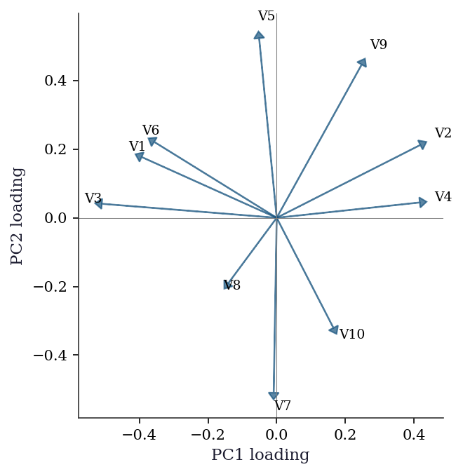
Variables with loadings in the same direction on PC1 and PC2 are positively correlated through those components. Variables at 90 degrees are uncorrelated; variables in opposite directions are negatively correlated.
19.5.3 Bandwidth selection for KDE
Silverman’s rule (bw='silverman') is the default. For multimodal distributions, it may oversmooth. Cross-validation (leave-one-out likelihood) gives a data-driven bandwidth but is more expensive.
# Compare bandwidth selectors
for bw_method in ['silverman', 'scott']:
kde_bw = KDEUnivariate(x_kde)
kde_bw.fit(kernel='gau', bw=bw_method)
print(f"{bw_method}: bw = {kde_bw.bw:.4f}")silverman: bw = 0.5601
scott: bw = 0.659019.5.4 Leave-one-out cross-validation for bandwidth
LOO-CV scores bandwidths by how well the KDE trained on \(n-1\) points predicts the held-out point. This avoids the Gaussian reference assumption in Silverman’s rule.
def loo_cv_score(data, bw):
"""Leave-one-out log-likelihood for KDE bandwidth.
For each point i, fit KDE on all other points and
evaluate at point i. Returns mean log density.
"""
n = len(data)
log_dens = np.empty(n)
for i in range(n):
# LOO: exclude point i
other = np.delete(data, i)
u = (data[i] - other) / bw
K = np.exp(-0.5 * u**2) / np.sqrt(2 * np.pi)
f_hat_i = K.sum() / ((n - 1) * bw)
# Avoid log(0)
log_dens[i] = np.log(max(f_hat_i, 1e-300))
return log_dens.mean()
# Search over a grid of bandwidths
bw_grid = np.linspace(0.1, 1.5, 30)
cv_scores = [loo_cv_score(x_kde, b) for b in bw_grid]
bw_cv = bw_grid[np.argmax(cv_scores)]
print(f"LOO-CV optimal bandwidth: {bw_cv:.3f}")
print(f"Silverman bandwidth: {silverman_bw(x_kde):.3f}")LOO-CV optimal bandwidth: 0.293
Silverman bandwidth: 0.660For the bimodal data, LOO-CV typically selects a smaller bandwidth than Silverman’s rule, better resolving the two peaks. This is the tradeoff: Silverman is fast (\(O(1)\) computation) but assumes unimodality; LOO-CV is \(O(n^2)\) but data-driven.
19.5.5 Residual diagnostics for kernel regression
Residuals from kernel regression should show no systematic pattern. Structured residuals indicate the bandwidth is wrong or the relationship has features the smoother cannot capture.
resid_kr = y_lo - y_pred
fig, axes = plt.subplots(1, 2, figsize=(10, 4))
axes[0].scatter(x_lo, resid_kr, s=8, alpha=0.5)
axes[0].axhline(0, color="gray", linewidth=0.5)
axes[0].set_xlabel("x")
axes[0].set_ylabel("Residual")
axes[1].hist(resid_kr, bins=25, density=True, alpha=0.5)
axes[1].set_xlabel("Residual")
axes[1].set_ylabel("Density")
plt.tight_layout()
plt.show()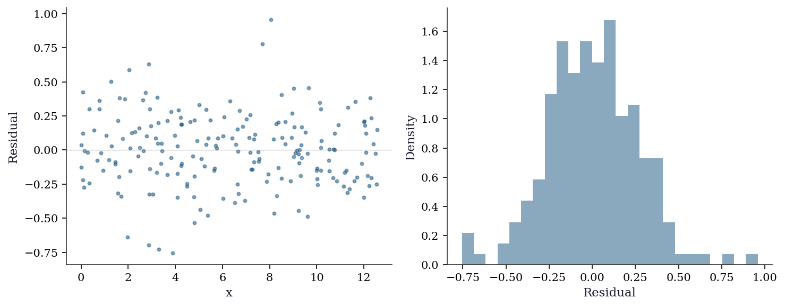
19.5.6 When PCA fails: nonlinear manifolds
PCA finds linear subspaces. If the data lies on a curved manifold (a Swiss roll, for example), PCA will spread the manifold across multiple components and fail to find a low-dimensional representation.
Diagnostic: if the scree plot shows no clear elbow and the first few PCs explain little variance despite obvious structure in the data, suspect nonlinearity. In such cases, consider kernel PCA, t-SNE, or UMAP — but note that these methods have their own tuning parameters and do not provide the same interpretability as PCA (no loadings, no variance decomposition). See Hastie, Tibshirani, and Friedman (2009), Ch. 14 for a treatment of nonlinear dimension reduction.
19.6 Computational Considerations
| Method | Cost | Dimension limit |
|---|---|---|
| PCA (via SVD) | \(O(\min(np^2, n^2 p))\) | Any (but interpretation degrades) |
| Factor analysis (PA) | \(O(p^3)\) per iteration | \(p \leq\) several hundred |
| Factor analysis (ML) | \(O(p^3 + np^2)\) | May not converge for large \(p\) |
| CCA | \(O(n(p_1 + p_2)^2)\) | Requires \(n > p_1 + p_2\) |
| MANOVA | \(O(nGp^2)\) | \(n \gg Gp\) for reliable tests |
| KDE (1D) | \(O(n)\) per evaluation | \(d \leq 3\) for visualization |
| KDE (\(d\)-dim) | \(O(n \cdot d)\) per evaluation | Curse of dim: \(d \leq 6\) |
| LOWESS | \(O(n^2)\) | 1D only |
| Kernel regression | \(O(n)\) per prediction | \(d \leq 5\) practical |
| LOO-CV bandwidth | \(O(n^2 \cdot |\text{grid}|)\) | Affordable for \(n < 10{,}000\) |
For high-dimensional KDE (\(d > 5\)), consider dimensionality reduction (PCA) first, then KDE in the reduced space. For large-\(n\) kernel regression, FFT-based binning reduces the cost from \(O(n)\) to \(O(\log n)\) per evaluation point; statsmodels uses this internally for 1D KDE via the fft parameter.
19.7 Worked Example
Exploring the California Housing dataset with PCA and nonparametric regression.
from sklearn.datasets import fetch_california_housing
from sklearn.preprocessing import StandardScaler
housing = fetch_california_housing()
X_h = StandardScaler().fit_transform(housing.data)
# PCA on the 8 housing features
pca_h = smPCA(X_h, ncomp=8, standardize=False) # already standardized
cumvar_h = np.cumsum(pca_h.eigenvals) / pca_h.eigenvals.sum()
print("Variance explained by each PC:")
for i in range(8):
print(f" PC{i+1}: {pca_h.eigenvals[i]/pca_h.eigenvals.sum():.1%} "
f"(cumulative: {cumvar_h[i]:.1%})")
n_keep = np.searchsorted(cumvar_h, 0.80) + 1
print(f"\nKeep {n_keep} components for 80% variance")Variance explained by each PC:
PC1: 25.3% (cumulative: 25.3%)
PC2: 23.5% (cumulative: 48.9%)
PC3: 15.9% (cumulative: 64.7%)
PC4: 12.9% (cumulative: 77.6%)
PC5: 12.5% (cumulative: 90.2%)
PC6: 8.2% (cumulative: 98.4%)
PC7: 1.0% (cumulative: 99.4%)
PC8: 0.6% (cumulative: 100.0%)
Keep 5 components for 80% variance# Loading plot: which features drive each PC?
feature_names = housing.feature_names
h_loadings = np.asarray(pca_h.loadings)
fig, ax = plt.subplots(figsize=(7, 5))
for j in range(len(feature_names)):
ax.arrow(0, 0, h_loadings[j, 0],
h_loadings[j, 1],
head_width=0.02, head_length=0.015,
color="C0", alpha=0.8)
ax.text(h_loadings[j, 0] * 1.12,
h_loadings[j, 1] * 1.12,
feature_names[j], fontsize=8)
ax.axhline(0, color="gray", linewidth=0.5)
ax.axvline(0, color="gray", linewidth=0.5)
ax.set_xlabel("PC1 loading")
ax.set_ylabel("PC2 loading")
ax.set_aspect('equal')
plt.show()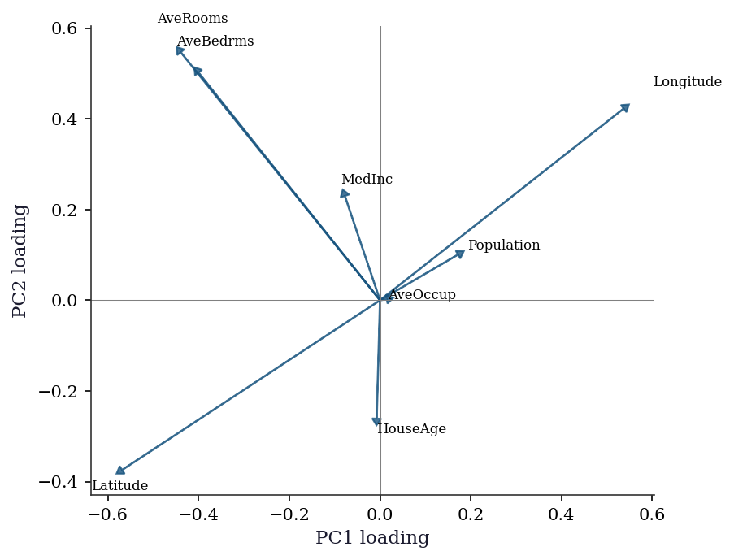
The loading plot reveals structure that the scree plot alone cannot: PC1 groups geographic and density variables (latitude, longitude, population, households), while PC2 separates income and housing-quality variables (rooms, bedrooms). This tells you that the first two principal “directions” in the data correspond to interpretable themes — geography vs economic status.
# Nonparametric regression: MedInc → house value
lowess_h = sm.nonparametric.lowess(
housing.target, housing.data[:, 0], frac=0.1,
)
fig, ax = plt.subplots()
ax.scatter(housing.data[:, 0], housing.target, s=1, alpha=0.1,
color="C0")
ax.plot(lowess_h[:, 0], lowess_h[:, 1], color="C1", linewidth=2,
label="LOWESS")
ax.set_xlabel("Median Income")
ax.set_ylabel("Median House Value")
ax.legend()
plt.show()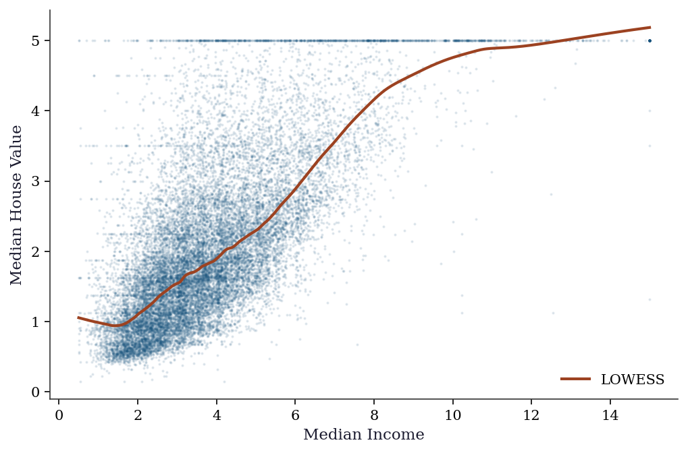
The LOWESS curve reveals the nonlinear relationship between income and house price: roughly linear up to income ≈ 5, then flattening. This nonlinearity would be missed by OLS.
# Fit OLS for comparison
import statsmodels.api as sm_ols
X_inc = sm_ols.add_constant(housing.data[:, 0])
ols_fit = sm_ols.OLS(housing.target, X_inc).fit()
x_plot = np.linspace(
housing.data[:, 0].min(),
housing.data[:, 0].max(), 200,
)
fig, ax = plt.subplots()
ax.scatter(housing.data[:, 0], housing.target, s=1,
alpha=0.08, color="C0")
ax.plot(lowess_h[:, 0], lowess_h[:, 1], color="C1",
linewidth=2, label="LOWESS")
ax.plot(x_plot,
ols_fit.params[0] + ols_fit.params[1] * x_plot,
'--', color="C2", linewidth=2, label="OLS")
ax.set_xlabel("Median Income")
ax.set_ylabel("Median House Value")
ax.legend()
plt.show()
print(f"OLS R²: {ols_fit.rsquared:.3f}")
print(f"LOWESS picks up the plateau above income ≈ 5 and "
f"the ceiling at target = 5.0")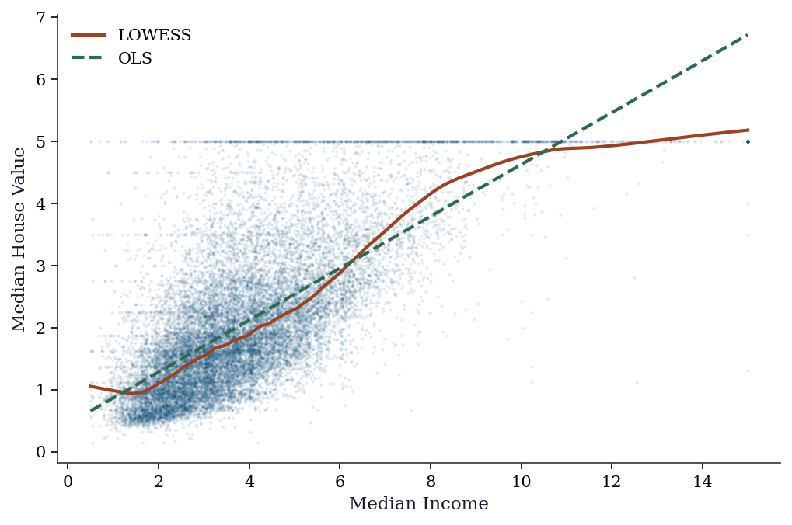
OLS R²: 0.473
LOWESS picks up the plateau above income ≈ 5 and the ceiling at target = 5.0The comparison is diagnostic: when OLS and LOWESS diverge substantially, the linear specification is wrong. Here the divergence above income ≈ 5 reveals a saturation effect — possibly driven by top-coding in the dataset (house values are capped at $500k, recorded as target = 5.0). A practitioner seeing this would investigate the top-coding rather than trusting the OLS slope.
19.8 Exercises
Exercise 19.1 (\(\star\star\), diagnostic failure). Apply KDE with a very small bandwidth (bw=0.05) and a very large bandwidth (bw=2.0) to the bimodal data. Show that small bw overfits (every point is a spike) and large bw oversmooths (misses the two modes).
%%
fig, axes = plt.subplots(1, 3, figsize=(12, 3))
for ax, bw, title in zip(axes, [0.05, 'silverman', 2.0],
['Undersmooth', 'Silverman', 'Oversmooth']):
kde_ex = KDEUnivariate(x_kde)
kde_ex.fit(kernel='gau', bw=float(bw) if isinstance(bw, (int,float)) else bw)
ax.hist(x_kde, bins=40, density=True, alpha=0.3)
ax.plot(kde_ex.support, kde_ex.density, linewidth=1.5)
ax.set_title(f"{title} (bw={kde_ex.bw:.3f})")
plt.tight_layout()
plt.show()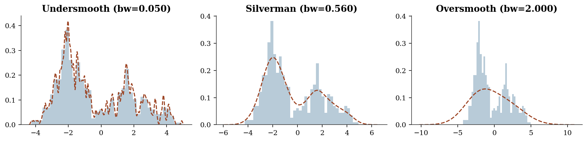
%%
Exercise 19.2 (\(\star\star\), comparison). Compare LOWESS with frac=0.1, 0.3, 0.5 on the sinusoidal data. Which fraction best captures the true curve? Relate frac to bandwidth.
%%
fig, ax = plt.subplots()
ax.scatter(x_lo, y_lo, s=5, alpha=0.3)
for frac in [0.1, 0.3, 0.5]:
lo = sm.nonparametric.lowess(y_lo, x_lo, frac=frac)
ax.plot(lo[:,0], lo[:,1], linewidth=1.5, label=f"frac={frac}")
ax.plot(x_lo, np.sin(x_lo), '--', color="gray", label="True")
ax.legend()
plt.show()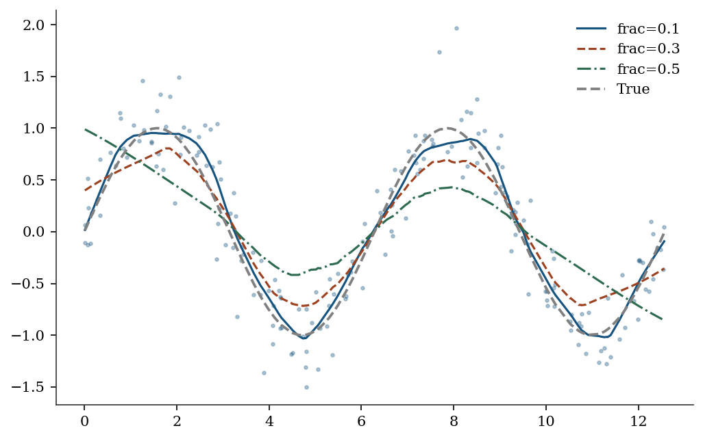
%%
Exercise 19.3 (\(\star\star\), implementation). Implement PCA via the eigendecomposition of the covariance matrix (not SVD). Verify against statsmodels PCA.
%%
cov_mat = np.cov(X_std.T)
eigvals, eigvecs = np.linalg.eigh(cov_mat)
# Sort descending
idx = np.argsort(eigvals)[::-1]
print(f"Cov eigenvalues: {eigvals[idx][:3].round(2)}")
print(f"statsmodels/(n-1): {(pca.eigenvals[:3]/(n-1)).round(2)}")Cov eigenvalues: [3.54 3.01 2.48]
statsmodels/(n-1): [3.54 3.01 2.48]%%
Exercise 19.4 (\(\star\star\star\), conceptual). The KDE convergence rate \(n^{-2/5}\) is slower than the parametric rate \(n^{-1/2}\). Show numerically that for \(n = 100\), KDE needs ~10x more data than a correctly specified normal model to achieve the same accuracy. What does this mean for the cost of not assuming a parametric form?
%%
The parametric rate \(n^{-1/2}\) means error \(\approx 1/\sqrt{n}\). The KDE rate \(n^{-2/5}\) means error \(\approx n^{-0.4}\). For equal accuracy: \(n_{\text{KDE}}^{-0.4} = n_{\text{param}}^{-0.5}\), so \(n_{\text{KDE}} = n_{\text{param}}^{1.25}\). At \(n = 100\): \(n_{\text{KDE}} = 100^{1.25} \approx 316\). The nonparametric approach needs ~3x more data for 1D. In \(d\) dimensions, the ratio grows exponentially — this is the curse of dimensionality.
%%
19.9 Choosing Between Methods
| Question | Method | Why |
|---|---|---|
| “What are the main patterns in my data?” | PCA | Finds directions of max variance |
| “What latent constructs drive my variables?” | Factor analysis | Models shared vs unique variance; rotation gives interpretable factors |
| “How are two variable sets related?” | CCA | Finds max-correlation linear combinations |
| “Do groups differ on multiple outcomes?” | MANOVA | Simultaneous multivariate test |
| “What does this distribution look like?” | KDE | Estimates density without assuming shape |
| “What is \(\mathbb{E}[Y \mid X]\) without assuming linearity?” | LOWESS / KernelReg | Nonparametric regression |
| “Can I reduce 100 variables to 5?” | PCA | If the first 5 PCs explain >90% variance |
| “Is this data normal?” | KDE + QQ plot | Visual check before applying parametric tests |
The fundamental tradeoff: Nonparametric methods make fewer assumptions (more general) but converge slower (\(n^{-2/5}\) vs \(n^{-1/2}\)) and suffer from the curse of dimensionality. Use them when you don’t trust the parametric form; switch to parametric methods when you have evidence the parametric model is correct.
19.10 Bibliographic Notes
PCA: Pearson (1901), Hotelling (1933). The connection to the eigendecomposition of the covariance matrix is in Anderson (2003), Ch. 11.
Factor analysis: Spearman (1904) introduced the single-factor model. Thurstone (1947) developed multiple-factor analysis and the concept of simple structure. Kaiser (1958) proposed the varimax rotation criterion. Bartholomew et al. (2011), Latent Variable Models and Factor Analysis, gives a modern treatment. For the rotation indeterminacy problem and its consequences, see Mulaik (2009), Foundations of Factor Analysis, Ch. 10.
CCA: Hotelling (1936) introduced canonical correlations. The connection to the generalized eigenvalue problem and SVD of the standardized cross-covariance is in Anderson (2003), Ch. 12. Hardoon, Szedmak, and Shawe-Taylor (2004) survey kernel extensions.
MANOVA: Wilks (1932) for the lambda statistic; Pillai (1955) for the trace. Anderson (2003), Ch. 8, covers the theory and the relationship between the four test statistics.
KDE: Rosenblatt (1956), Parzen (1962). Silverman (1986) for bandwidth selection theory, the rule-of-thumb bandwidth, and the AMISE derivation reproduced in this chapter. Scott (1992), Multivariate Density Estimation, extends the theory to multiple dimensions.
LOWESS: Cleveland (1979). The frac parameter is the analogue of the bandwidth.
Kernel regression: Nadaraya (1964), Watson (1964). Local linear regression: Fan (1993), who proved the boundary-bias result described in this chapter. Fan and Gijbels (1996), Local Polynomial Modelling and Its Applications, is the definitive reference. The design-adaptivity property (automatic boundary correction, adaptation to heterogeneous design density) is why reg_type='ll' is the default in statsmodels.
For a comprehensive treatment of nonparametric methods: Wasserman (2006), All of Nonparametric Statistics. For the statsmodels implementation details: Racine and Li (2004) describe the mixed-data kernel framework used by KernelReg.